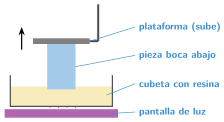
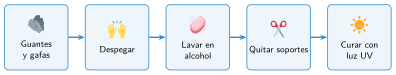

La impresora de resina
🤔 Pienso5 min
Qué hago aquí: Piensa un momento y contesta con lo que ya sabes. No pasa nada si no lo sabes: es para empezar.
Mira y toca una pieza de filamento y otra de resina. ¿En qué se diferencian?
✏️ Puedes responder escribiendo, con un dibujo o un esquema, o contándolo en voz alta.
📖 Leo y aprendo15 min
Qué hago aquí: Lee despacio, mira los dibujos y los ejemplos, y quédate con la idea clave del final.
La impresora de resina también imprime capa a capa. Pero no funde un hilo: endurece un líquido con luz.
La resina es un líquido que se endurece con luz ultravioleta. Una pantalla ilumina la forma de cada capa. La pieza se forma boca abajo, colgada de una plataforma que sube.

Cuando termina, la pieza aún no está lista:

| Filamento | Resina | |
|---|---|---|
| Detalle | se ven las capas | muy fino |
| Resistencia | buena | más frágil |
| Tamaño | piezas grandes | piezas pequeñas |
| Seguridad | la boquilla quema | guantes, gafas y ventilación |
✏️ Hago25 min
Qué hago aquí: Haz las actividades en orden. Empieza siempre por las básicas.
Completa: la resina es un que se endurece con .
Ordena los pasos. Escribe 1, 2, 3 y 4.
Curar Despegar Quitar soportes Lavar
¿Qué EPI necesitas para usar la impresora de resina?
¿Con qué impresora harías una figura de 3 cm para un juego de mesa? ¿Por qué?
¿Con qué impresora harías una caja grande para guardar las placas Micro:Bit? ¿Por qué?
🚀 Amplío (si quieres saber más)
Qué hago aquí: ¿Has terminado? Lee la curiosidad o elige el reto. Es voluntario.
¿Por qué crees que la tapa de la impresora de resina es de color naranja?
✅ Compruebo5 min
Qué hago aquí: Contesta sin mirar la ficha y marca cómo lo llevas.